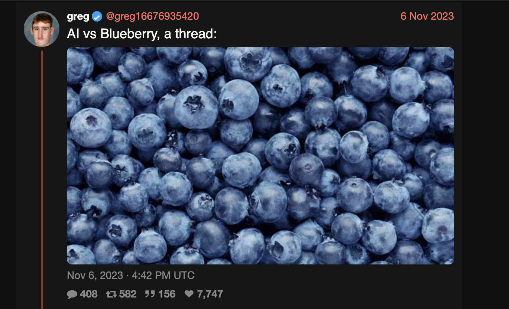

Andrew Marble
marble.onl
andrew@willows.ai
June 25, 2025
For almost as long as LLMs have been around, people have been pointing out they are bad at counting letters in words.

(This twitter thread was about positions of letters but same idea)
I don’t know why one would want an LLM to do this, but it does seem like something you’d expect anything “intelligent” to do, and it’s a good demonstration of the fact that LLMs just generate good sounding nonsense, they don’t have some world model to compare it to. But I don’t want to dwell on that here.
The popular explanation for why LLMs can’t count letters is that they operate on tokens which are groups of letters. People on internet forums will tell you that “strawberry” is tokenized as “str”-“aw”-“berry”, and it’s these chunks that are manipulated, making the letters hard to count.
This may be true, but to me it’s a bad explanation and I don’t believe it. First, LLMs don’t have an obvious mechanism to count anything. They’re a classifier that picks the next best token, there’s no little man watching things go by, so whether it’s letters or groups of letters, nobody’s there to count them. An LLM doesn’t understand how it works or what a token is at some intuitive level.
Until I see a proper explanation, I’m leaning towards the token thing to just be something people repeat to sound smart without thinking it through. But maybe I’m missing something.
Anyway, the good news, and second reason I’m sceptical of the token explanation, is that LLMs can think in letters just fine, and we can test them on this:
Computers work with numbers, so internally, tokens are mapped to numbers and words or sentences to lists of these numbers. So “strawberry” above is [“str”, “aw”, “berry”] -> [495, 672, 15357] (for the tokenizer I’m using here). The tokens are an efficient way to group characters together; in this case we represent the word with three numbers instead of the ten that would be needed if we represented every letter separately. But – each letter does have its own token, and if we want, we can use these to represent the word instead: [‘s’, ‘t’, ‘r’, ‘a’, ‘w’, ‘b’, ‘e’, ‘r’, ‘r’, ‘y’] -> [82, 83, 81, 64, 86, 65, 68, 81, 81, 88].
This means we can feed these numbers in instead – it will still spell the same word, but the little man counting tokens will now “see” all of them, and so should have an easier time.
To test if this makes counting easier, I compared tokenizing using regular tokens and letter-by-letter tokens for a set of words. I used Qwen2.5-7B-Instruct (an LLM) because it’s open source, making it easy to play with tokenization, and makes more mistakes counting letters than newer models.
The words I tried are shown below. I asked Anthropic Claude 4 to generate 15 words with three or more repeated letters and got this response that shows you where the state of the art on letter counting is (below is verbatim output):
Banana - 'a' appears 3 times
Mississippi - 's' appears 4 times, 'i' appears 4 times
Committee - 'm' appears 2 times, 't' appears 2 times, 'e' appears 3 times
Assessment - 's' appears 4 times
Tennessee - 'e' appears 4 times, 'n' appears 2 times
Lullaby - 'l' appears 3 times
Baboon - 'b' appears 2 times, 'o' appears 2 times (Let me replace this with a better example)
Possess - 's' appears 4 times
Referee - 'e' appears 4 times
Coffee - 'f' appears 2 times, 'e' appears 2 times (Let me replace this)
Tattoo - 't' appears 2 times, 'o' appears 2 times (Let me replace this)
Mammoth - 'm' appears 3 times
Pizzazz - 'z' appears 3 times
Sleepless - 's' appears 3 times, 'e' appears 3 times
Bookkeeper - 'e' appears 3 times, 'k' appears 2 times, 'o' appears 2 times
Alfalfa - 'a' appears 4 times
Seventeen - 'e' appears 4 times
Coconut - 'c' appears 2 times, 'o' appears 2 times (Let me replace this)
Pepper - 'p' appears 3 times
I ran these words through Qwen tokenized both normally and in single letters.
| Word | Letter | Qwen (tokens) | Qwen (letters) | Ground Truth |
|---|---|---|---|---|
| banana | a | 3 | 3 | 3 |
| mississippi | s | 4 | 4 | 4 |
| committee | m | 3 | 3 | 2 |
| assessment | s | 2 | 3 | 4 |
| tennessee | e | 3 | 3 | 4 |
| lullaby | l | 3 | 3 | 3 |
| baboon | b | 2 | 2 | 2 |
| possess | s | 2 | 2 | 4 |
| referee | e | 3 | 2 | 4 |
| coffee | f | 2 | 1 | 2 |
| tattoo | t | 2 | 3 | 3 |
| mammoth | m | 2 | 3 | 3 |
| pizzazz | z | 1 | 2 | 4 |
| sleepless | s | 2 | 3 | 3 |
| bookkeeper | e | 3 | 3 | 3 |
| alfalfa | a | 3 | 3 | 3 |
| seventeen | e | 2 | 3 | 4 |
| coconut | c | 2 | 2 | 2 |
| pepper | p | 3 | 3 | 3 |
Tallying up the results we have 47% accuracy for the default [“str”, “aw”, “berry”] style tokenization and 58% for the letter-by-letter [‘s’, ‘t’, ‘r’, ‘a’, ‘w’, ‘b’, ‘e’, ‘r’, ‘r’, ‘y’] tokenization.
Is this a real effect? I think we’d need to be more rigorous (l had only wanted 15 words to test and Claude thoughtfully gave me 19) but it’s certainly looking that way. So maybe there is something to the “LLMs see in tokens” theory, even if there’s not a good explanation for it. If you ever have a mission critical letter counting application and want a performance boost, you might as well override the default tokenization for the words you’re interested in.